Cadastrar · em branco
A janela aberta pelo botão “Cadastrar interessado”: quem é, de onde veio o contato, dados pessoais e quem cuida. Responsável e próximo passo já vêm sugeridos.
Abrir o HTML neste estadoDesenho para a Carol aprovar antes do código: cadastrar à mão quem chegou por indicação, evento ou contato direto (F2.5) e o sino de avisos do Console (F2.6). Dados fictícios; hoje é sábado, 21/11/2026. Clique numa imagem para abrir o HTML naquele estado. Decisões, textos e perguntas estão no NOTAS.md.
F2.5 · SC-05, PT-11. Console › Comercial › Interessados, vista por Rafael Teles (Implantação). Para quem chegou por indicação, evento ou contato direto.
A janela aberta pelo botão “Cadastrar interessado”: quem é, de onde veio o contato, dados pessoais e quem cuida. Responsável e próximo passo já vêm sugeridos.
Abrir o HTML neste estadoResumo no topo, com o foco nele; cada erro preso ao seu campo. O botão nunca fica desabilitado e nada foi cadastrado.
Abrir o HTML neste estado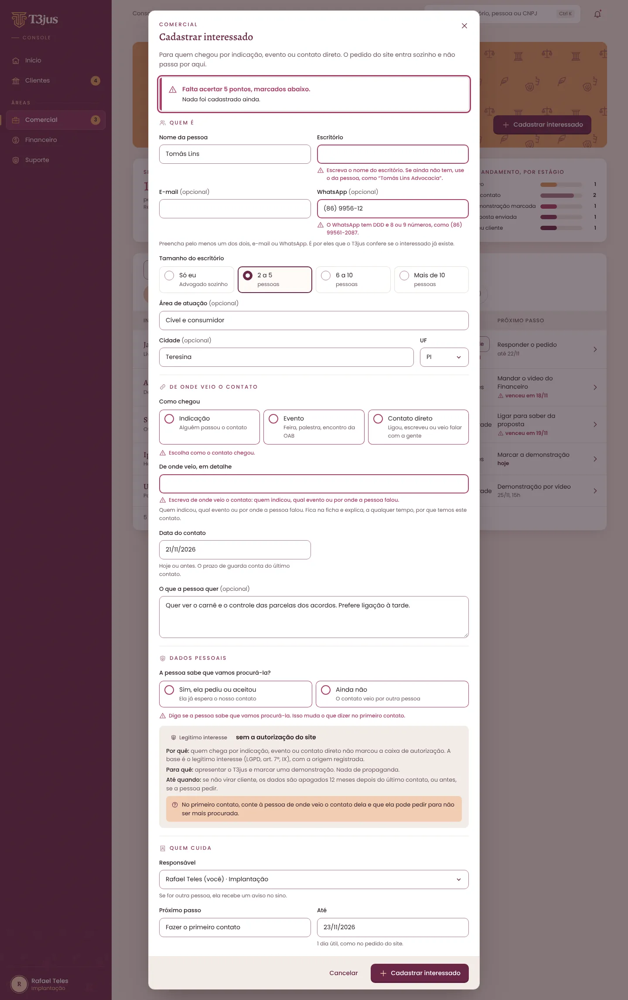
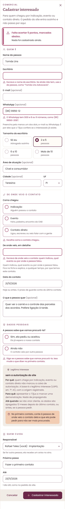
Botão ocupado, campos travados, anúncio para o leitor de tela.
Abrir o HTML neste estado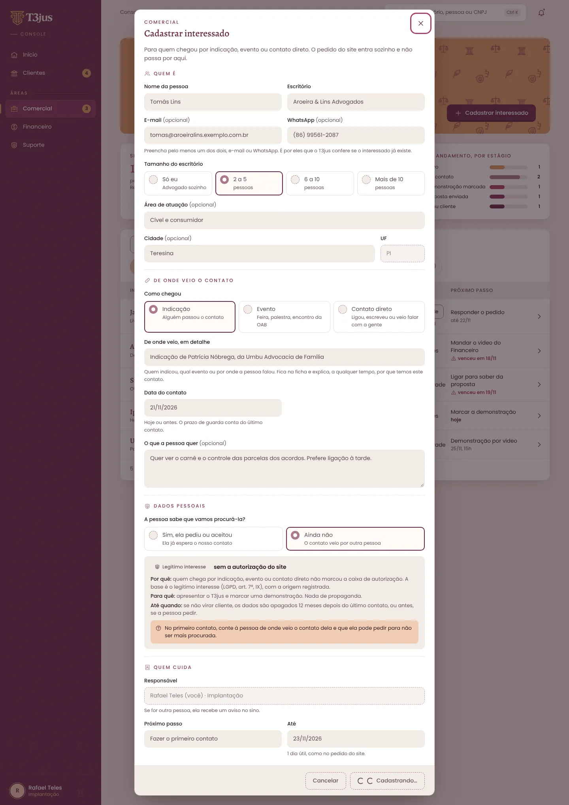
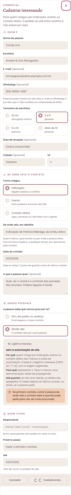
O e-mail é igual ao de um interessado que já existe: juntar ao existente, abrir o existente ou, se for outro escritório, cadastrar mesmo assim.
Abrir o HTML neste estado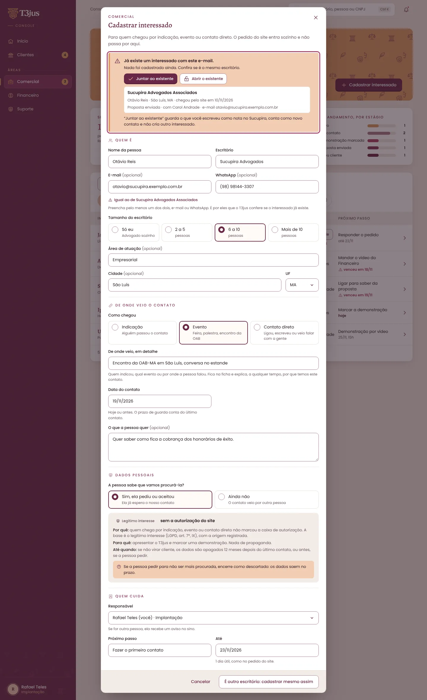
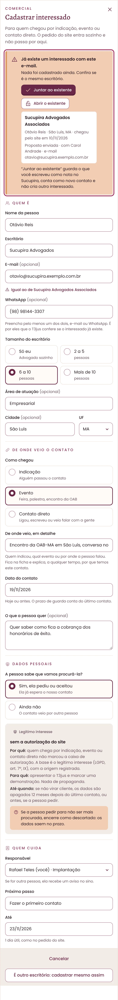
Tudo o que foi escrito continua na janela; tentar de novo, com código para o suporte.
Abrir o HTML neste estado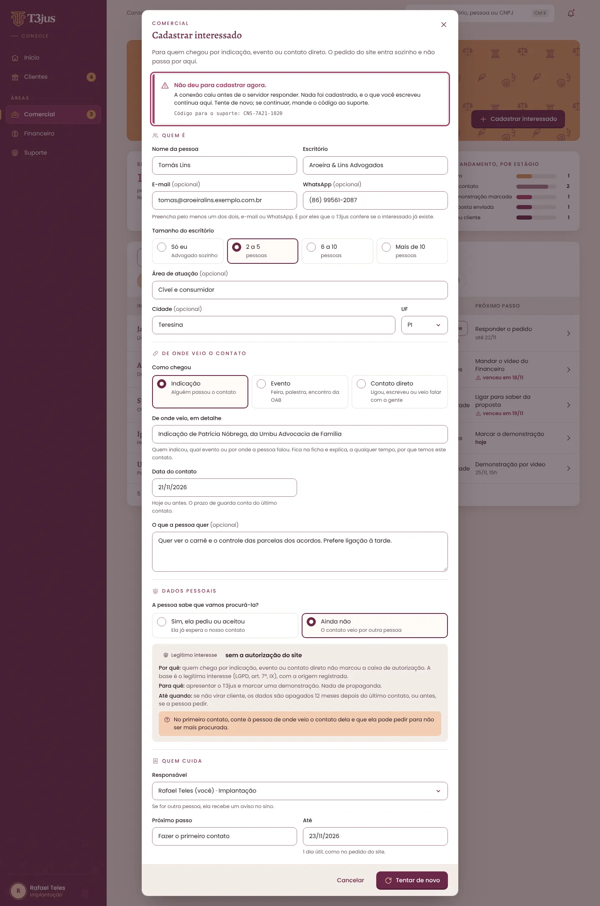
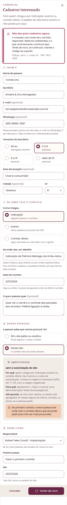
Cai direto na ficha do interessado novo, com “cadastrado à mão por Rafael Teles”, de onde veio o contato e a base legal.
Abrir o HTML neste estado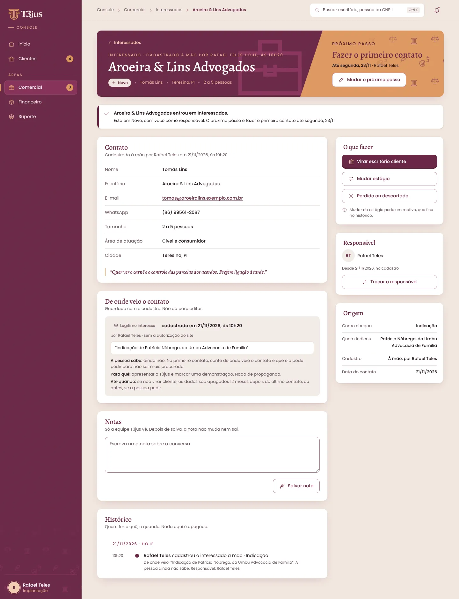
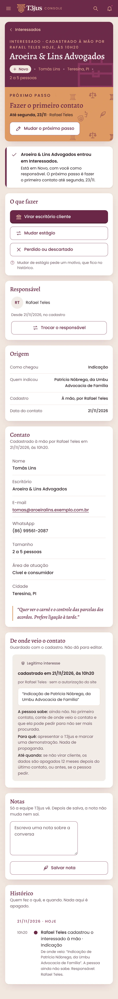
Financeiro e Suporte não veem Interessados, e por isso também não cadastram.
Abrir o HTML neste estadoF2.6 · SC-02, SC-05. O sino que já estava na moldura aprovada passa a abrir o painel de avisos, no mesmo padrão do sino do Portal.
O sino da moldura aprovada com o ponto de novo; o rótulo diz “Avisos, 3 novos”. Clique no sino para abrir.
Abrir o HTML neste estado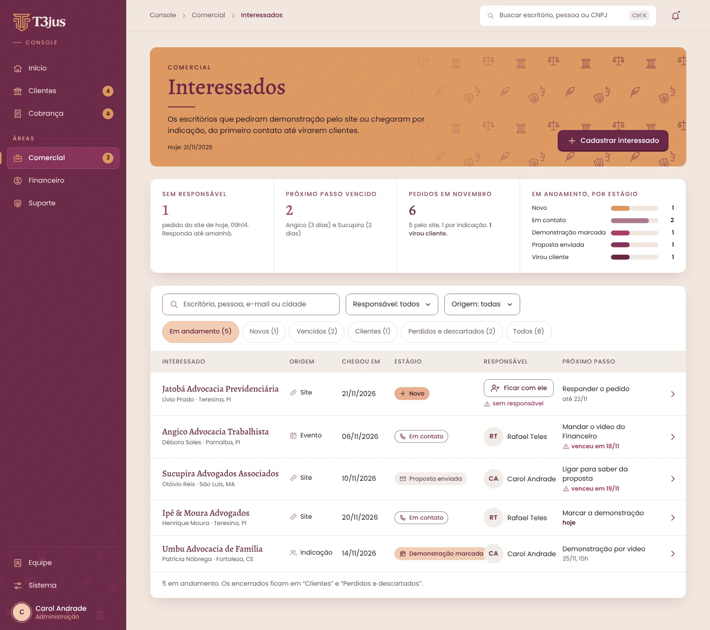
Carol: o pedido novo do site, o próximo passo vencido e o interessado que Rafael passou para ela, agrupados por dia.
Abrir o HTML neste estado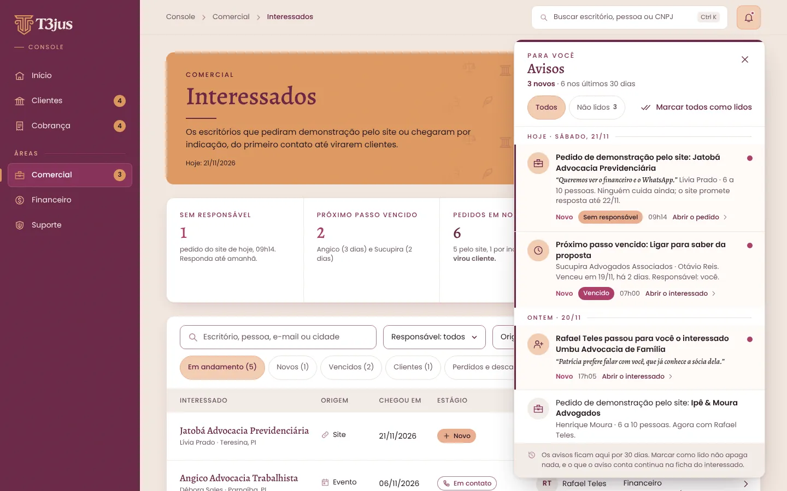
O filtro “Não lidos” ligado.
Abrir o HTML neste estado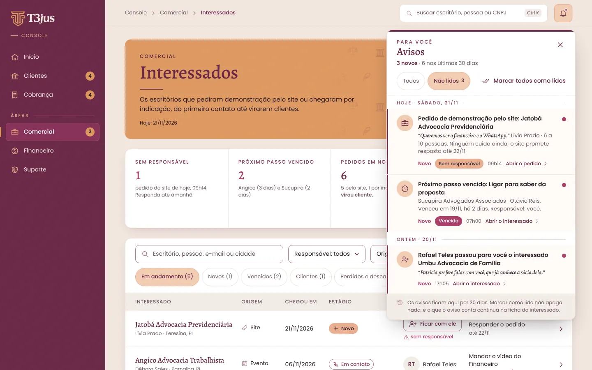
Depois de “Marcar todos como lidos”: os avisos continuam, sem o destaque, e o ponto do sino some.
Abrir o HTML neste estado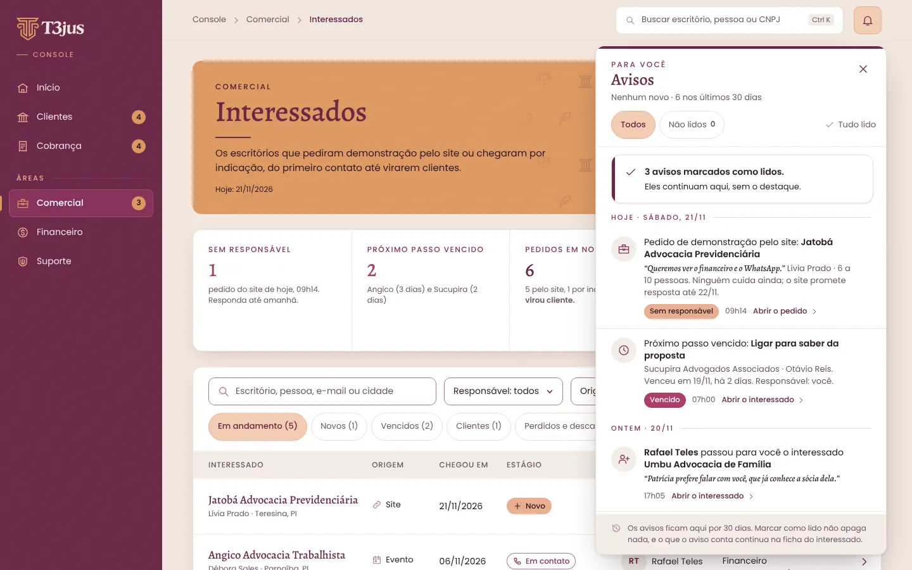
Luísa, que acabou de entrar na Implantação: o que chega aqui.
Abrir o HTML neste estado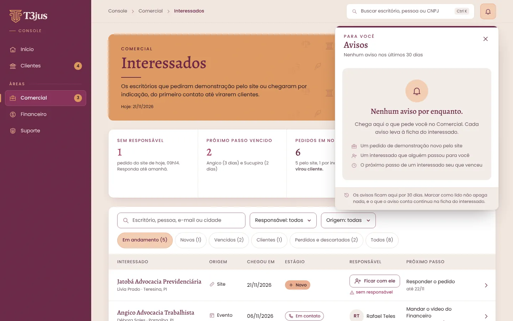
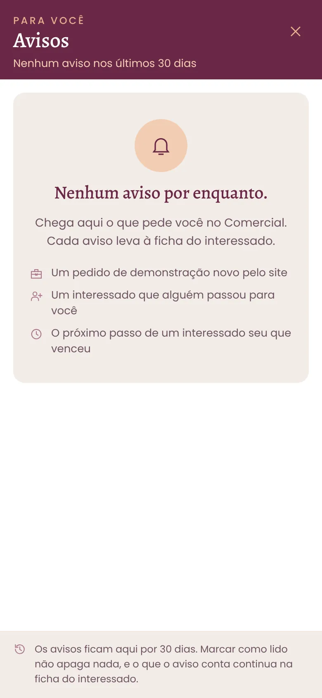
Tentar de novo, com código para o suporte; o ponto continua com a última contagem.
Abrir o HTML neste estado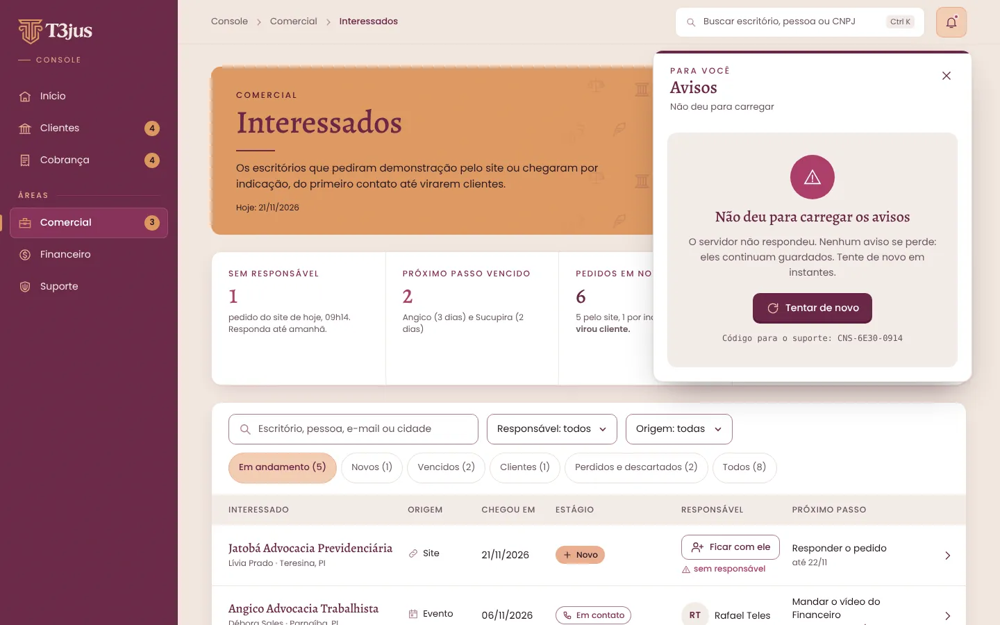
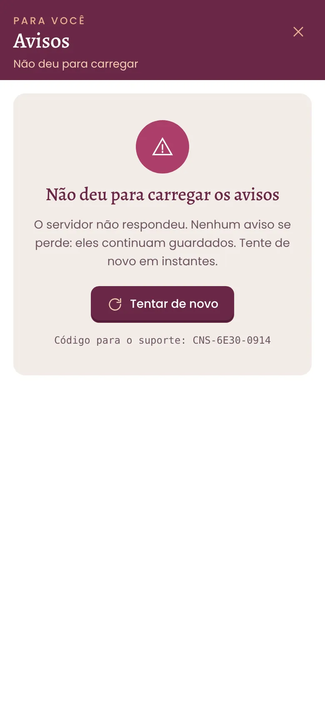
Marta, do Financeiro, na Cobrança aprovada: não recebe aviso de interessado; o painel diz o porquê. O Suporte vê o mesmo.
Abrir o HTML neste estado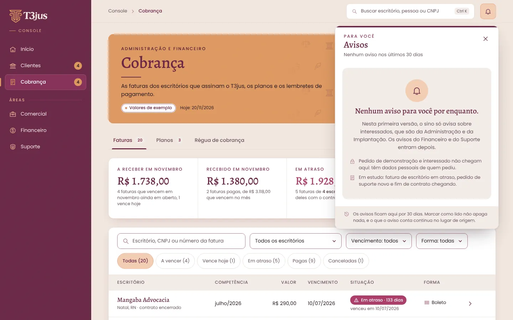
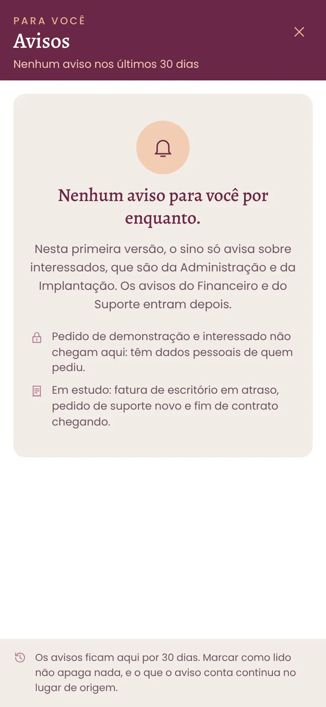